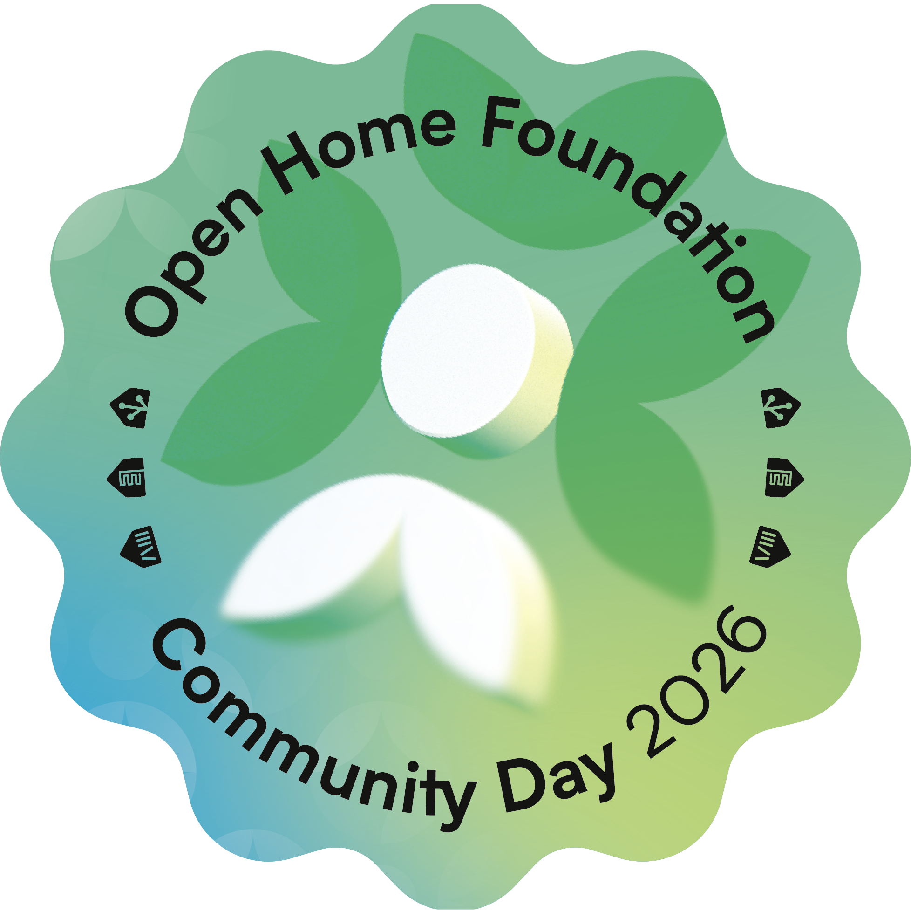
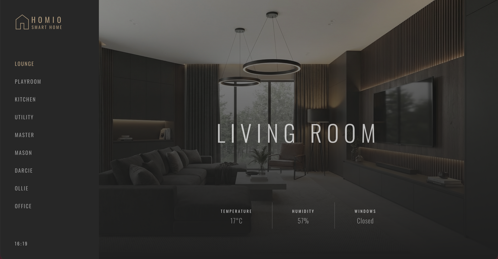
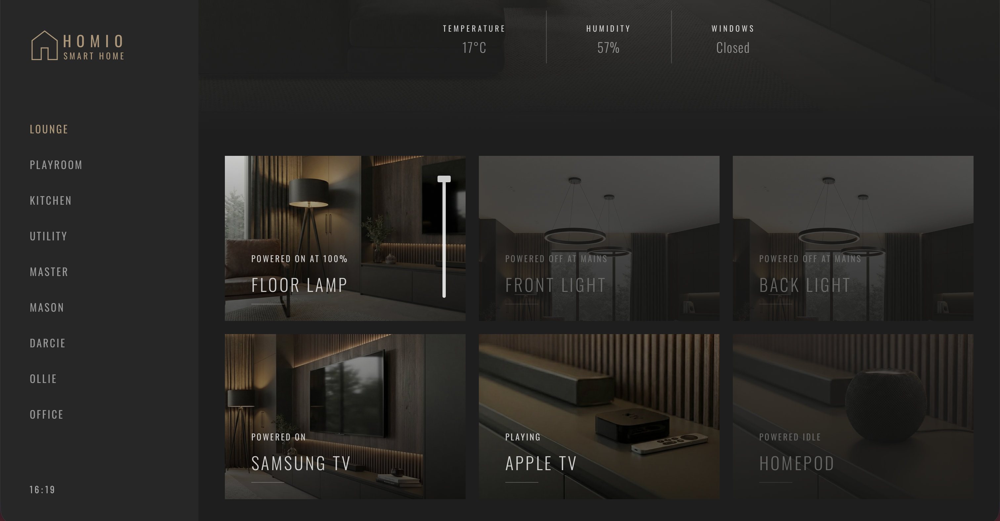
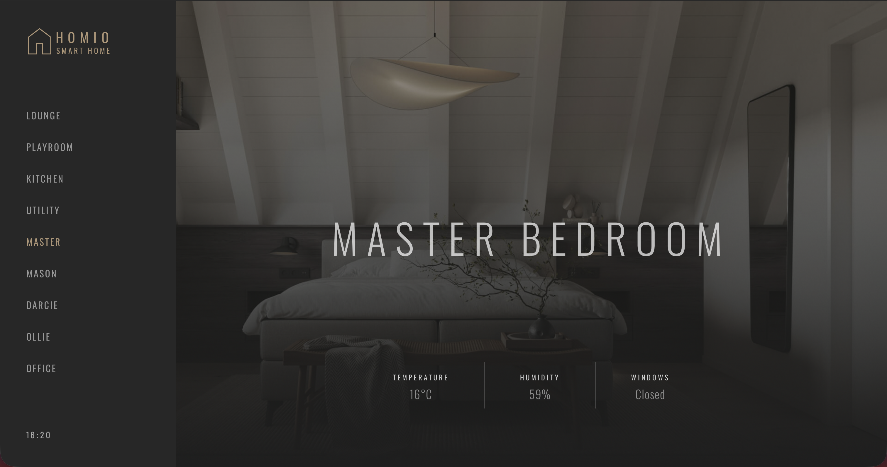
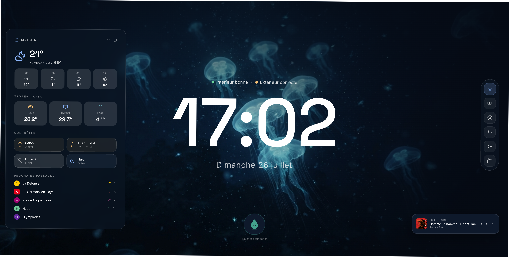
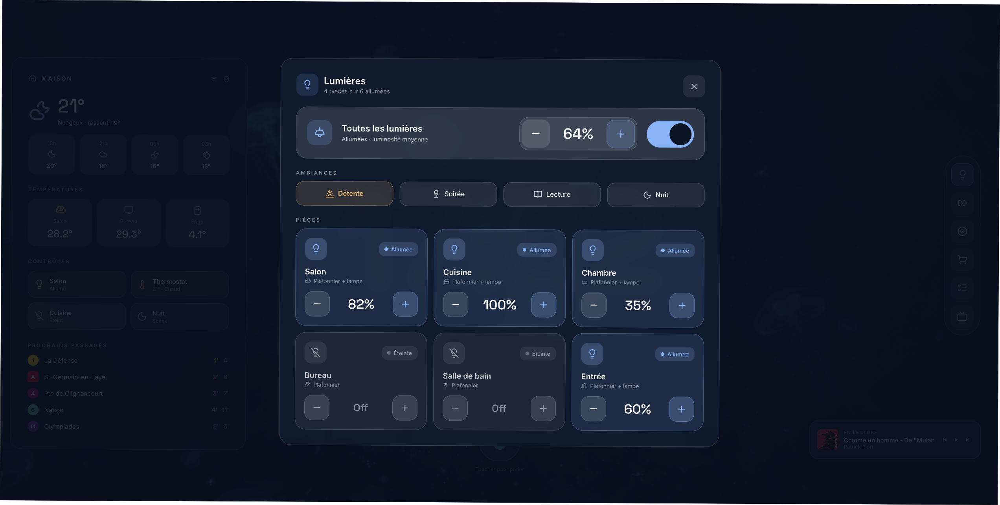
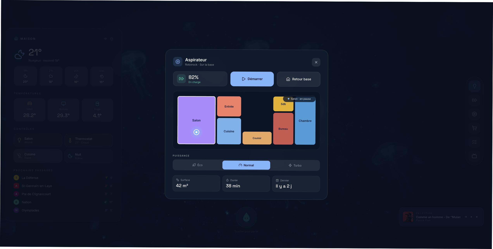
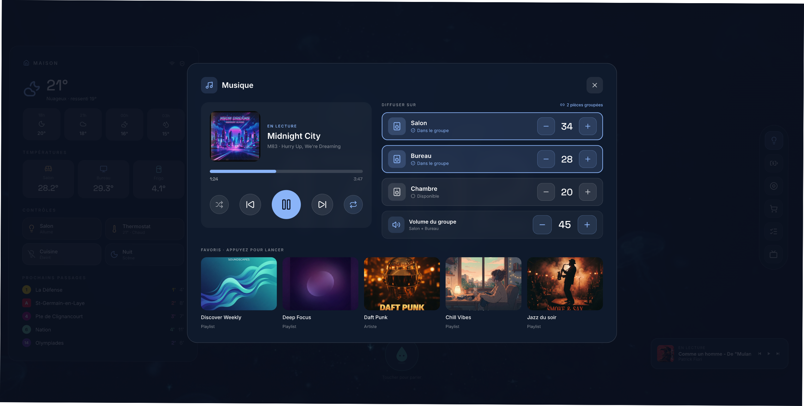

Open Home Foundation Community Day · Lisbon · 6 November 2026
The dashboard is the
face of our home.
A spare tablet on the wall can turn Home Assistant into something
the whole household can use.
One tap for the lights. A glance to see what’s on. A welcoming
control panel for family—and guests—without handing over a phone
or giving anyone a tour of the app.
Familiar at a glanceHigh WAFGuest-friendly

Sejam todos muito bem-vindos a Lisboa. Numa casa inteligente, o painel
é muitas vezes a primeira coisa que as pessoas veem e usam, por isso
acaba por ser a cara do Home Assistant em casa. Imaginem um tablet
antigo, esquecido numa gaveta: montado na parede, transforma-se num
painel de controlo simples e partilhado. A família pode usá-lo sem ter
de abrir uma aplicação, e as visitas podem acender uma luz ou ativar
uma cena sem precisarem de uma explicação. O objetivo é juntar
simplicidade e utilidade numa solução que toda a família adote — um
WAF elevado, sem deixar de tornar a casa acolhedora.
the idea, in practice
From spare tablet to shared control panel.
My Home Assistant wall-dashboard implementation
A home interface should feel obvious.
01
Room-by-room clarityDedicated views like Sala &
Suite with live temperature and state
02
One-tap everyday actionsLights, climate, media, and scenes right where you walk
by
03
Made for family & guestsVisual status at a glance—no phone or app tour
required
Built by adapting open-source ideas to fit how our home actually
works.
Aqui têm uma visita guiada de 27 segundos ao tablet que tenho
instalado na parede de casa. Reparem como está organizado por
divisões, como a Sala e a Suite, para que qualquer pessoa que passe
possa ver num relance a temperatura e o que está ligado, ou tocar uma
vez para controlar as luzes, as cenas ou a climatização. O objetivo
não é mostrar todos os sensores do Home Assistant, mas sim destacar as
poucas ações de que a família e as visitas precisam no dia a dia. E a
melhor parte? Não têm de criar tudo de raiz. Vamos conhecer três
projetos de código aberto da comunidade que vos podem dar uma boa
base, consoante a forma como gostam de construir.
open-source starting point · 01 / 03
Homio by iamtherufus
Lovelace YAMLbutton-cardResponsive tablet & mobile

Lounge overview · room banner & quick controls

Interactive light sliders & states

Room-by-room view (Master)
Em primeiro lugar, temos o Homio, de iamtherufus: um painel do Home
Assistant simples e minimalista, baseado em modelos YAML reutilizáveis
e cartões Lovelace personalizados. Se já gostam de trabalhar com o
ecossistema Lovelace nativo do Home Assistant e com YAML, este é um
excelente ponto de partida. Usa os modelos button-card, layout-card e
slider para criar cabeçalhos de divisão simples, com temperatura e
humidade em tempo real e indicadores de movimento. Como usa ficheiros
YAML modulares, definem o modelo de cartão para uma divisão uma única
vez e reutilizam-no na sala, nos quartos e nas vistas para telemóvel.
Em segundo lugar, temos o Homie Dashboard, de Big-Edge2297: uma
experiência pronta a usar para tablets de parede, com o aspeto e a
simplicidade de um aparelho dedicado, sem precisar de YAML do
Lovelace. A abordagem é bastante diferente: em vez de trabalharem com
YAML do Lovelace, instalam-no através do HACS ou colocam-no na pasta
www e configuram tudo num único ficheiro config.js. Foi concebido
especificamente para tablets de parede, com ecrãs próprios e fáceis de
usar por toque para multimédia, meteorologia, energia solar, câmaras e
luzes, além de nove temas de cores incluídos.
open-source starting point · 03 / 03
HA Tablet Dashboard
by NathanLenias
Plain HTML / CSS / JSDirect WebSocket APIZero Build Step

Glassmorphism home screen · clock, weather & room sidebar

Lighting & scene control panel

Interactive vacuum room map & status

Sonos media controls & battery status
E, em terceiro lugar, temos o Home Assistant Tablet Dashboard, de
NathanLenias: uma aplicação web estática de página única que comunica
diretamente com a API WebSocket do Home Assistant, sem Lovelace, sem
frameworks e sem ferramentas de empacotamento. Se têm um tablet mais
antigo, em que os frameworks web pesados funcionam com lentidão — ou
simplesmente gostam de escrever HTML, CSS e JavaScript sem bibliotecas
adicionais —, este projeto dispensa por completo o Lovelace e os
passos de compilação. Liga-se diretamente à API WebSocket do Home
Assistant a partir de uma página estática e inclui funcionalidades
muito úteis, como uma planta interativa para o aspirador, controlos
Sonos em tempo real, deteção automática da bateria e um modo noturno.
Escolham o ponto de partida que melhor se adapta ao vosso estilo e
personalizem-no.
Thank you!
Questions?
Missed a link? Scan for the deckAll slides, video & GitHub repospedrojreis.github.io/Community-Day-Presentation
Muito obrigado! Se não conseguiram ler algum dos códigos QR dos
repositórios, podem apontar a câmara para este código para abrir a
apresentação no vosso telemóvel. Inclui o vídeo e ligações diretas
para os três projetos no GitHub. Gostava muito de saber o que
construíram para as vossas casas ou de responder às vossas perguntas!